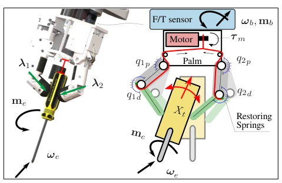
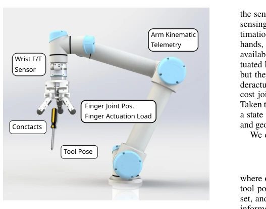
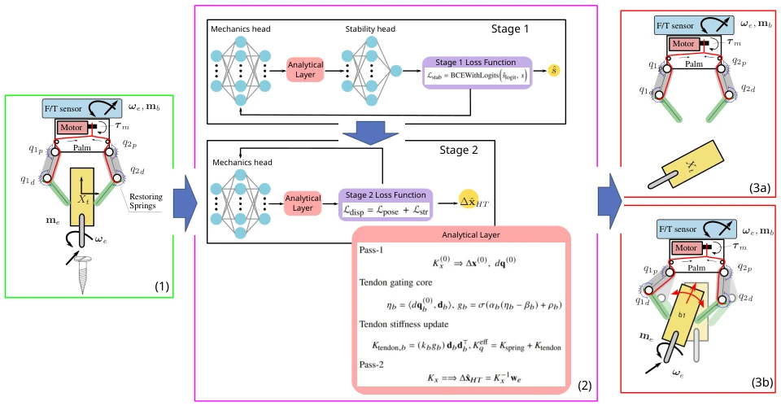
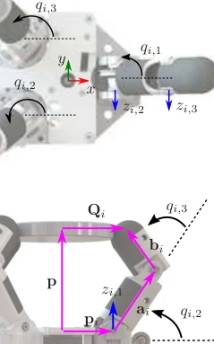
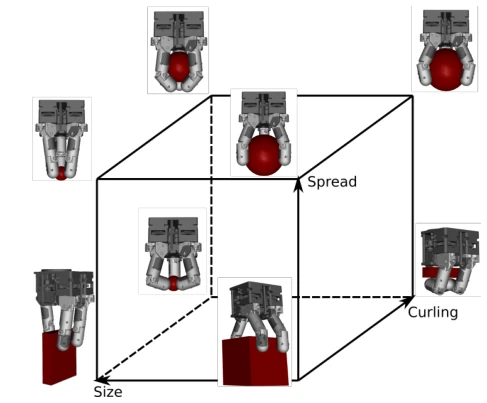
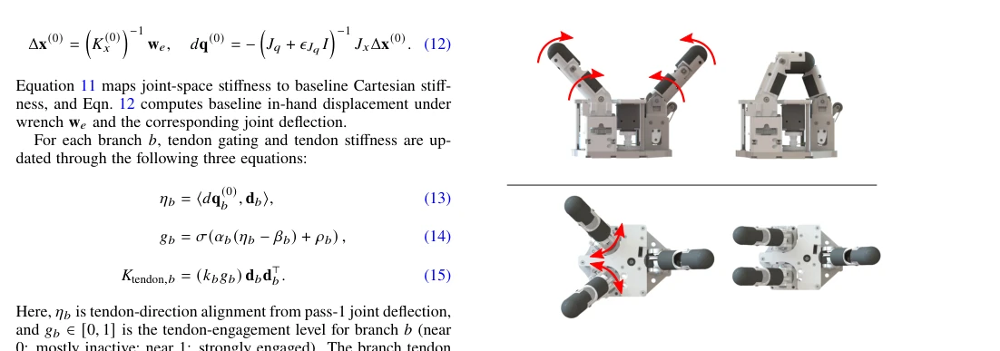
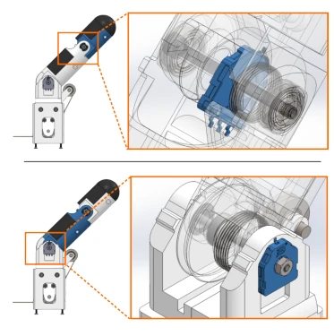
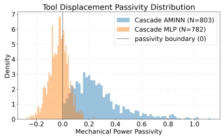

This paper adds a concrete focus to the "Physics-Informed Neural Networks" (PINN) trend: instead of vaguely discussing physical consistency, it doggedly tackles "compliance of underactuated manipulators when using force-affected tools". Although "physics-guided learning" has been overhyped in recent years, with many works merely adding a regularization term, the authors did not play tricks, directly cutting into the most headache-inducing underactuated coupling problem, attempting to constrain nonlinear learning with an analytical layer. However, whether this increase in architectural complexity is worth it depends on real-time performance. After all, forcing Jacobian and stiffness matrices into the network, inference speed is likely to be compromised. Moreover, currently only running smoothly in simulation, whether it can withstand sensor noise and contact uncertainty on real machines remains a question mark. For the industry pursuing "black-box performance", this "interpretability" might not be as desirable as "accuracy", but in safety-critical scenarios, this is indeed a necessary compromise.
Traditional grasp evaluation mostly stays at the binary judgment of "grasped firmly or not" [1-3], which is okay for transport, but when doing tool manipulation, how much "shake" of the tool in the hand is considered qualified? Existing analytical models often rely on linearization or ideal contact assumptions [14, 15], making it difficult to handle the complex passive elasticity and tendon coupling of underactuated hands; pure data-driven models, although capable of fitting nonlinearity, easily "hallucinate" behaviors violating physical laws [42, 43], leading to contradictions between predicted displacement direction and force direction. Especially in force control interaction, this uninterpretable prediction directly threatens safety, for example, the robot thinks it has grasped firmly, but the tool has actually undergone large displacement. The core pain point the authors want to solve is: how to ensure the model output displacement and stability conform to mechanical consistency while maintaining prediction accuracy, avoiding the robot "using too much force" or "bluffing", providing trustworthy force control feedback for safety-critical tasks.

Figure 1 Underactuated robotic hand grasping a screwdriver- like tool before and after loading, illustrating grasping compli- ance during tool use.

Figure 2 Representative arm–wrist–hand stack highlighting commonly available sensing cues used to estimate the state: robot-arm kinematics, wrist force/torque sensing, and sparse hand-side signals such as finger position and actuator- or tendon-side load information.
The core is the AMINN architecture, adopting a cascaded prediction flow. Stage 1 first judges stability, Stage 2 predicts displacement only on stable samples. The innovation lies in embedding the analytical mechanics layer into the network structure, rather than only as a loss function. Specifically, the network predicts branch spring blocks and tendon gains through a "mechanics head", utilizing a two-stage analytical layer (Pass 1 only spring response, Pass 2 combined with tendon activation) to calculate the effective stiffness matrix. This design forces the model to learn displacement mapping consistent with the Jacobian relation (Eq 7), ensuring energy conservation (Passivity). Compared to black-box MLP, it constrains the nonlinear learning process with differentiable mechanics equations, making the output not just numerical fitting, but physically interpretable deformation. Especially targeting the passive elasticity of underactuated hands, the model explicitly models the tendon Engagement state, making stiffness prediction vary dynamically with configuration, rather than fixed parameters.

Figure 3 Overview of the prediction pipeline. (1) A robotic hand grasps a tool, and the grasped tool undergoes loading; (2) the proposed analytical-model-informed learning architecture; (3) model outputs: (a) binary stability and (b) tool displacement.

Figure 6 Notation of the three-finger hand used in kinematic analysis.
Data comes from a physics-based simulation environment, using hand synergy subspace to generate a large number of feasible grasp states [8], solving the problem of difficult real data collection. The comparison baseline is Cascade MLP. Evaluation metrics besides conventional F1 and RMSEpose, also introduced "signed work" to quantify energy passivity violation rate. Results show, AMINN matches MLP on stability prediction, but wins completely on physical consistency (Passivity violation rate near 0, while MLP is higher). This proves that in underactuated scenarios, embedding mechanics structure can effectively suppress unphysical predictions. Although currently mainly relying on simulation data, not involving real machine transfer, results validate the effectiveness of "physics-guided" in improving model credibility, providing theoretical basis for subsequent real machine deployment.

Figure 8 Hand synergy-inspired subspace and representa- tive hand grasping configurations.
其他图片Other Figures

Figure 4 Custom three-finger hand joint motions. Top: flex- ion at finger joints. Bottom: abduction/adduction at base joints.

Figure 7 Finger joint sensors and transmission details of the underactuated hand.

Figure 9 Predicted-stable signed-work distribution on the IID test split for Cascade AMINN and Cascade MLP. Signed work is computed per sample as w = wtr e · ∆ˆxtr HT . The dashed line at w = 0 separates passivity-consistent predictions (w > 0) from passivity-violating predictions under the translational work proxy (w < 0).